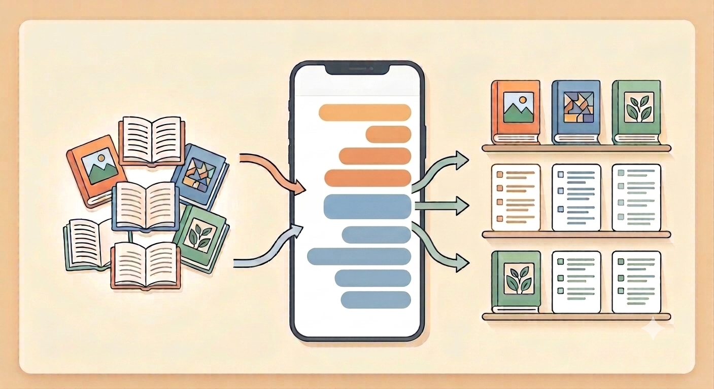

서비스 소개
편안한 병행독서 기록 도우미
그날그날의 흩어진 기록을 한 곳에서 모아 볼 수 있습니다.

주요 기능
-
읽는 중 책 목록
읽는 중 책을 추가하고 한곳에서 확인하고 완독 상태를 변경합니다.
-
책 메모 추가
책을 선택하고 메모를 입력합니다.
-
완독 책 목록
다 읽은 책을 누르면 그 책의 메모가 모여 보입니다.
이용 방법
- 읽는 중 책을 추가합니다.
- 책을 선택해 채팅하듯 가벼운 메모를 남깁니다.
- 다 읽은 책의 기록을 메일로 받아 봅니다.